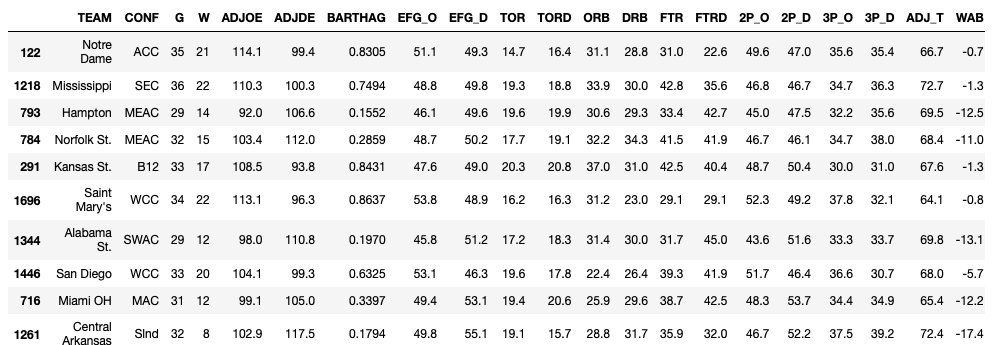
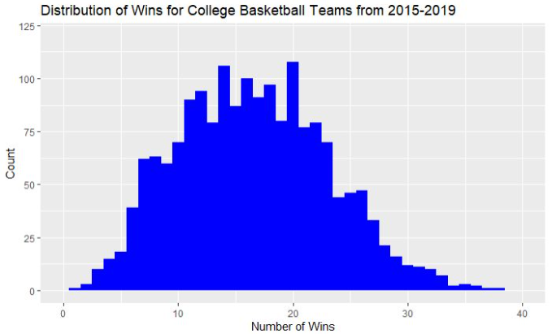
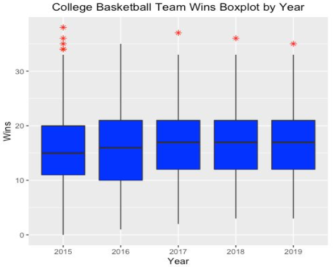
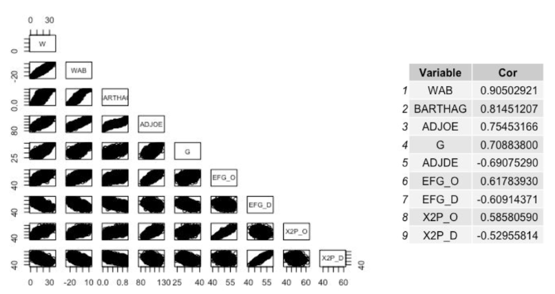
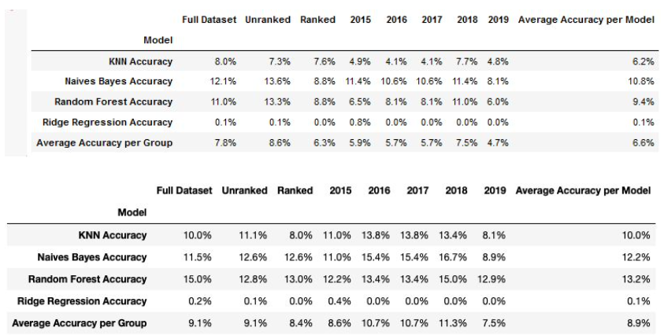
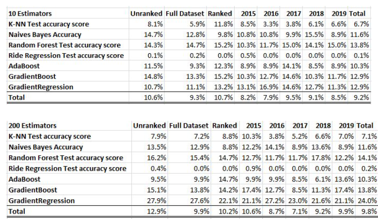
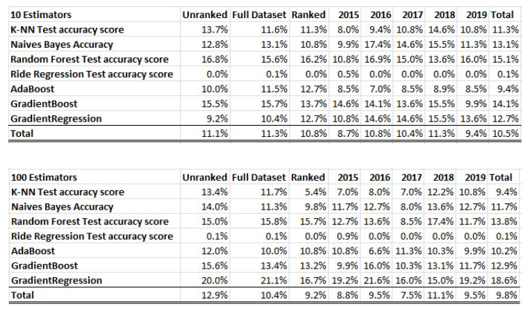
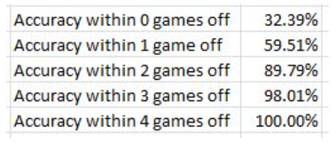

Overview
College basketball is one of the most popular sports in the United States, often producing more revenue than its professional hockey and soccer counterparts. In our study, we sampled big data from the NCAA to answer the question, “Can we predict how many wins a school will have in a given season?” We used 24 different data points about the team (numerical values like offensive and defensive efficiency, wins in the previous year(s), etc.) to build a model that accurately predicts how well the team will do in future seasons. To narrow our variables down we determined the top 9 variables that had the best relationship to our data when predicting future win totals. We then broke the data into subsets such as unranked vs ranked teams and by specific season from 2015 through 2019. Levering four regression modeling techniques, K-Nearest Neighbor (KNN), Naive Bayes, Random Forest, and Ridge Regression and adding boosting ensemble techniques, we were able to predict with 90% accuracy within 2 games of a team’s win total. In an effort to increase the model’s accuracy we feel adding additional historical team data to years prior to 2015 would further increase the accuracy of our model. We would like to leverage this model for the upcoming 2021 college basketball season to put it to the test and see if it truly can predict the number of wins a team will have for a college basketball season.
March Madness, the college basketball postseason tournament, is now the second most lucrative postseason sports environment for broadcasters, trailing only the NFL playoffs and Super Bowl for the number of advertising dollars it generates. According to Kantar Media data, last year's tournament churned up $1.32 billion in ad revenue, up three percent versus 2017's $1.28 billion, while marking a 17 percent improvement compared to $1.13 billion in 2014. That's significantly more commercial cash than what TNT and ABC/ESPN reap during the NBA postseason ($970 million) and all but eclipses the $468 million placed on Major League Baseball's playoffs and World Series.
In addition to revenue, college basketball also produces an extraordinary amount of viewers. According to industry leader Nielsen, viewership for the opening weekend of the March Madness tournament reached its second-highest rating in 29 years. College basketball was one of the first major sports to embrace streaming and social media, and saw its social accounts produce a 56 percent lift in engagements versus last year’s tournament across its Facebook, Twitter and Instagram channels.
So how does all of this tie into a project on predictive analytics? With the rise of revenue and viewership also comes the rise of outlets and avenues for people to engage with the sport. One of these avenues is sports betting. College basketball is one of the most popular forms of sports betting in the US. With more than 350 schools competing, there can be hundreds of games available to bet on during nights and weekends. Several states offer online sports betting, and there are many sportsbooks opening throughout the country.
Our thought is to leverage big data from a big corporation like the NCAA. The question we want to answer is, “Can we predict how many wins a school will have in a given season?.” If we have access to some data about the team (numerical values like offensive and defensive efficiency, wins in the previous year(s), as well as factor data like the conference, even team name) can we build a model that can accurately predict how well the team will do? Can we predict a team’s performance in the future season(s)? As was stated earlier, each year there are over 350 schools in 32 conferences that we are able to look at.
Human behavior is one of the most difficult to predict due to the inconsistencies of people and their actions. College basketball is a sport that is performed by humans (and refereed by humans), which leads to erratic outlier behaviors that sometimes stun fans and analysts alike. Is the data useful in making predictions, or are sports truly unpredictable? We expect that throughout our analysis, we will be able to uncover multiple predictors that allow us to accurately determine the number of wins a college basketball team will have. Predictive analytics is used extensively in basketball by teams to try to increase their chances of winning. Therefore, we expect to uncover multiple variables with strong relationships that aid us in predicting the number of wins for a team.
The Data
 Sample of the datatset we will be using to train our model.The data we will use for our project is from Andrew Sundberg’s College Basketball Dataset found on Kaggle. This dataset contains 24 different statistics about every NCAA Division I college basketball team from 2015 - 2020 that range from standard basketball statistics like turnover percentage and three point shooting percentage, to more complex analytic values like power rating and adjusted tempo.
To start this research, we first need to gain a better understanding of the scope of our data. In order to accomplish this, we will take a look at some simple plots that will allow us to evaluate the distributions of some of the key variables of interest. These plots will consist of scatter plots and histograms, and will be created in R using the ggplot2 library.
Another key step we need to take in our preliminary analysis is to evaluate the relationships between the vast number of variables in our dataset. Coding in R, we will make use of the pairs() function to evaluate the bivariate relationships between the variables in our dataset. By looking at the output of the pairs function, we will be able to determine if any of the variables have strong relationships when evaluating wins.
Method
We begin our analysis by looking at some initial plots of our data to identify “relevant” data points. We will leverage these relevant data points in an attempt to build an accurate prediction model for the number of wins a team will have in a given season. We thought it might be a good idea to take a look at the distribution of wins. To do this, we created a histogram of the wins column:
This graph shows us that we have quite a daunting task ahead of us. There are teams that have had only one win, and teams that have had almost 40 wins. The good news is that the data seems fairly normal and symmetric. After running some tests on the data we determined the data has a very slight positive skew. However, the skewness of the data is only 0.20 and not significant enough to require transformations on the data.
One caveat to note, we excluded the 2020 season from our analysis. This season was cut short due to the Covide-19 pandemic and we did not have an NCAA tournament or final team rankings. This incomplete season is an outlier and should be removed from the data set to ensure we are not feeding our model bad data. As they say, garbage in, garbage out.
After ensuring the data is normal, the next step we took in the exploratory data analysis phase of this project was outlier analysis. As you can see in the boxplots above, there were multiple data points that could be considered outliers. However, after examining the historical win totals, we verified these “outliers” were accurate and should not be excluded from our analysis. These outlier teams were the top teams in the respective seasons and had above average win totals for those seasons. In actuality, 2016 could be considered an outlier as there was no top team that stood out from the rest in terms of win totals. This must have made gambling on the 2016 NCAA tournament quite difficult for college basketball fans.
The next important aspect of our data to evaluate in these preliminary steps is the bivariate relationships between the variables in our dataset. We want to know if any of the variables have a strong relationship with the number of wins a team has.
After running a correlation analysis on all of the remaining 23 variables in our data set against total wins, we determined a cut off for the variables we wanted to focus on for our analysis. Any variable with a correlation to totals wins above 0.50 or less than -0.50 was to be included in our modeling. Variables with a correlation above 0.50 have a positive linear relationship with wins; as these values increase, so do the number of wins. The inverse is true for variables with a correlation below -0.50. These variables have a negative linear relationship with wins; as these values increase, the number of wins decreases. These variables would be the most important factors in our analysis. The below correlation matrix identified the top 9 variables when it comes to predicting total team wins and the correlation for each variable:
Results
When it came to modeling, we took our time to come up with what we thought could possibly provide the best possible results to answer our original question. For our modeling, we used 4 different models to test for accuracy of predictions. The models we decided to use were K-Nearest Neighbor, Naive Bayes, Random Forest, and Ridge Regression. We then split the dataset into two datasets, one with all the original 24 fields and one with only the 9 variables (referred to as the grouped up dataset going forward) with correlations greater than an absolute value of 0.50 in the chart from the previous section. We then broke down each of the datasets into 8 different sub-datasets. The unranked dataset was only including college teams that did not make the NCAA tournament and were not ranked. The full dataset contains all rows with no filters. The ranked dataset is for only teams that made the NCAA tournament and were ranked. 2015 through 2019 datasets only had data for teams for each of the corresponding years. By breaking our data into so many different sub-datasets, we could see if there were years easier to predict than others, or if ranked or unranked teams were easier to predict.
For testing purposes we tested every model at least three times every time it was run to get an average in case one time was an anomaly. After running the four models on both datasets, the average was 6.6% for the full dataset and 8.9% for the grouped up dataset as seen in the two images below. You can also see that 2019 is the hardest sub-dataset to predict with the lowest overall accuracies of 4.7% for the full dataset and 7.5% for the grouped dataset, which are the lowest overall percentages in both charts.
Simply by removing fields with lower correlations, we were able to increase the accuracies overall compared to the full dataset. Naives Bayes was on average the best algorithm for the dataset, while Random Forest was the most accurate algorithm for the grouped dataset. Ridge Regression was not a very good algorithm for the dataset with not even 1% accuracy.
Next we added three different ensemble techniques to attempt to increase the accuracy even further. The three ensemble techniques added were AdaBoost, Gradient Boost, and Gradient Regression. After re-running models and including the new ensemble techniques, we achieved much higher accuracies overall compared to models without the use of ensemble techniques.
The images above are the four original models as well as the three new ensemble techniques for the sub-datasets with 24 fields. We tested out the ensemble techniques with estimators equal to 10, 50, 100, 200, and 500 estimators. As you can see from the images above, as the number of estimators increased from 10 to 200, the accuracy overall also increased. We can see that with 200 estimators, Gradient Regression was able to get up to 24% overall with the highest accuracy achieved of 27.2% with 2016. This was surprising and not surprising at the same time. At first, you would wonder why the worst sub-dataset prior to using ensemble techniques was able to get the highest accuracy using the ensemble techniques. But ensemble techniques boost better with weak predictors and the 2016 sub-dataset had weak predictors to boost much more compared to other sub-datasets.
The images above are the same models and ensemble techniques but for the grouped up sub-datasets of 9 fields. As you can see, the over accuracy is higher than those of the sub-datasets with 24 fields. However, you will notice that the accuracy did decrease overall when increasing the number of estimators. This is because there are fewer weak predictors in the grouped up sub-datasets as the fields used had higher correlations as opposed to the sub-datasets with 24 fields which contained lower correlated fields.
After running many tests to get the highest possible accuracy, we were able to achieve an accuracy of 32.39% using Gradient Regression on a sub-dataset with 24 fields. Also, we were able to achieve high accuracies within +/- 1 and 2 games as seen in the image below.
Conclusion
We started with the question “Can we predict how many wins a school will have in a given season?.” Step one was finding a dataset, Andrew Sundberg’s College Basketball Dataset. This dataset included 24 variables for every college basketball team from 2015-2020. Step two was exploring this dataset. We made two key decisions from this exploratory data analysis; one, eliminate the 2020 season because it was impacted by the COVID-19 pandemic, and two, focus our attention on 9 of the 24 variables which we deemed to be the most relevant.
The final and most important step was the modeling. Using the techniques KNN, Naive Bayes, Random Forest, and Ridge Regression, we built models to predict the number of wins a team would have in a given season. We tested these models using all variables, as well as just the nine we deemed to be most relevant, and in both instances the models were not incredibly accurate. However, we then made the decision to include some ensemble techniques. Using AdaBoost, GradientBoost, and GradientRegression, we were drastically able to increase the accuracy of our models. In fact, when all was said and done, we were able to accurately predict 90% of college basketball teams’ win totals within two games.
Does this level of accuracy mean we can answer our question as “Yes”? That is certainly up for debate. While our model did not accurately predict 100% of the win totals, being able to match 90% within two games leads me to believe we have built a very powerful model. We also believe there are future steps we can take to improve the model further. The first step would be to find more data. Our model was somewhat limited due to the fact that our data was somewhat limited. If we were able to expand on this data for years earlier than 2015 there would be much more room for our model to grow. Also, the ensemble methods actually thrived when we used all 24 variables in our model, so if we were able to find more statistics for each team I think that would also be of help. Finally, our model may benefit from including past results to predict future outcomes. As it stands currently, we are using data from the 2019 season to predict how a team did in the 2019 season. The next step in our analysis should be to use the 2019 season to predict how a team will do in the 2021 season and so on. Once again, this will give our model more opportunity to thrive.
Acknowledgments
I would like to thank Zack DeNoto and Chris Goodwin, my classmates on this project, for the cotrobutions to this project. This project was 100% a group effort and each individual put in a lot of effort to ensure the project turned out as great as it did.
Citations
Crupi, A. (2019, March 26). Despite a glaring lack of hoopla, March Madness ratings soar. Retrieved from https://adage.com/article/media/march-madness-ratings-soar/317133
Impey, S. (2019, March 26). NCAA March Madness ratings second highest in 29 years. Retrieved from https://www.sportspromedia.com/news/ncaa-march-madness-ratings-second-highest
James, G., Witten, D., Hastie, T., & Tibshirani, R. (2017). An introduction to statistical learning: with applications in R. New York: Springer.
NCAA Basketball Betting - Guide to Legal Basketball Betting. (n.d.). Retrieved from https://www.legalsportsreport.com/sports-betting/college-basketball/